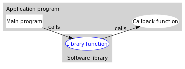

前言
程序模块之间存在一定的接口，从调用方式上可以分为三类：
-
同步调用：阻塞的 单向 调用 -
回调： 双向 调用 -
异步调用： 回调与异步调用的关系非常紧密，我们通常使用回调来实现异步消息的注册，通过异步调用实现消息的通知。
callback
先看一下维基百科的定义
In computer programming, a callback is a piece of executable code that is passed as an argument to other code, which is expected to call back (execute) the argument at some convenient time. The invocation may be immediate as in a synchronous callback or it might happen at later time, as in an asynchronous callback.

从上图可以看到，在涉及到第三方包调用时，callback是个很好的方式，Spring各种插件也经常采用这种方式封装第三方包。
C、C++可以通过传递函数指针(function pointers)给其他函数。 python、JavaScript 可以通过传递函数名
Java中的回调
Java是通过回调接口，实现回调函数的
public class TemplateMethodPatternCallback {
private ICallBack callBack;
public TemplateMethodPatternCallback(ICallBack callBack){
this.callBack = callBack;
}
public void invokeCallBack(){
System.out.println("不拉不拉不了");
callBack.callback();
System.out.println("已经执行完回调");
}
public static void main(String[] args) {
TemplateMethodPatternCallback tm = new TemplateMethodPatternCallback(new ICallBack(){
@Override
public void callback() {
System.out.println("执行回调");
}
});
tm.invokeCallBack();
}
}
interface ICallBack{
void callback();
}
可以看到上面回调的例子，很像模板方法模式，但是他们还是有一些区别的：
- 模板方法模式借助于 继承 ，对抽象方法在子类中进行实现\扩展，是在编译期间静态决定的，是类级关系；而Java回调方法，利用动态绑定技术在运行期间动态决定，是对象级关系
- 回调机制更灵活，基于接口方便扩展。
- 模板方法模式，更加简单，因为父类可以提供默认的实现方法，子类如果不想扩展，可以不管。
异步回调
public class CallbackClass2 implements Runnable{
private String mess;
private TempCallBack cb;
public CallbackClass2(TempCallBack cb) {
this.cb = cb;
}
@Override
public void run() {
System.out.println("run start");
try {
Thread.currentThread().sleep(5000);
} catch (InterruptedException e) {
e.printStackTrace();
}
cb.excute(mess);
System.out.println("run end");
}
public void sendMess(String mess){
this.mess = mess;
System.out.println("sendMess start");
Thread thread = new Thread(this);
thread.start();
System.out.println("sendMess end");
}
public static void main(String[] args) {
CallbackClass2 cb = new CallbackClass2(new TempCallBack(){
@Override
public void excute(String mess) {
System.out.println("回调函数得到消息："+mess);
}
});
cb.sendMess("213123sd");
System.out.println("主线程做其他事情");
}
}
interface TempCallBack{
void excute(String mess);
}
日期：2014-03-28、2014-03-31
参考资料：Java回调与模板方法模式、深入浅出Java回调机制、回调函数（callback）是什么？、Java 回调机制及其Spring 中HibernateTemplate的源码分析、Callback (computer programming)、13、内部类（闭包与回调）